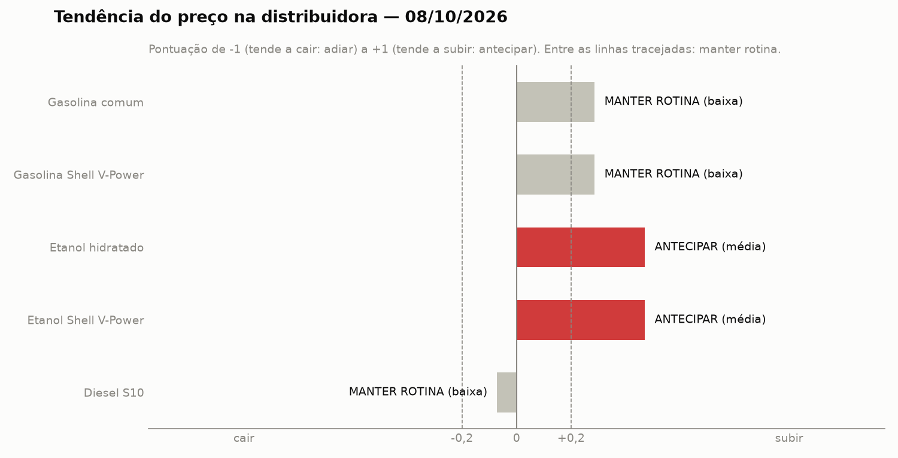
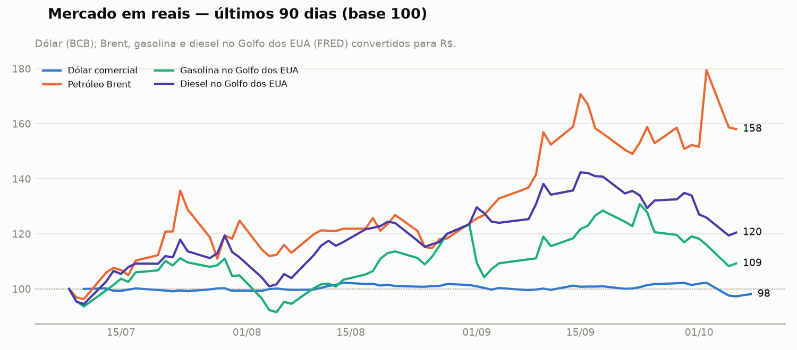

| Produto | Decisão | Confiança | Pontuação (mercado / notícias) |
|---|---|---|---|
| Gasolina comum | ➖ MANTER ROTINA | baixa | +0,29 (-0,37 / +0,73) |
| Gasolina Shell V-Power | ➖ MANTER ROTINA | baixa | +0,29 (-0,37 / +0,73) |
| Etanol hidratado | 🔺 ANTECIPAR | média | +0,47 (-0,73 / +0,60) |
| Etanol Shell V-Power | 🔺 ANTECIPAR | média | +0,47 (-0,73 / +0,60) |
| Diesel S10 | ➖ MANTER ROTINA | baixa | -0,07 (-0,43 / +0,29) |

Prezado responsável de compras do posto em Lavras, o cenário para os próximos 7 dias apresenta sinais conflitantes no mercado internacional e interno, exigindo cautela. O dólar comercial está cotado a 5,01 R$/US$, com variação de -3,8% em 7 dias e -1,4% em 30 dias. Enquanto o Petróleo Brent subiu para 623,41 R$/barril (+4,8% em 7 dias e +19,0% em 30 dias), os derivados no Golfo dos EUA recuaram, gerando incertezas. A recomendação geral é manter a rotina para a maioria dos combustíveis, exceto para o etanol, onde a indicação é antecipar as compras devido a fatores específicos de safra e tributação.
Mantemos a rotina com confiança baixa devido aos sinais conflitantes no mercado. Temos a alta do petróleo Brent e o risco do fim da desoneração de PIS/Pasep e Cofins em 9 de outubro (notícia 2), contrapondo-se à queda da gasolina no Golfo dos EUA (-6,6% em 7 dias) e a recuo do dólar comercial a 5,01 R$/US$ (-3,8% em 7 dias).
Sinais conflitantes: mercado e notícias apontam para lados opostos; por isso a recomendação é manter a rotina.
Principais fatores:
A decisão é manter a rotina com confiança baixa pelos mesmos motivos da gasolina comum. O cenário opõe a alta de 4,8% em 7 dias do petróleo Brent e a possível virada tributária em 9 de outubro (notícia 2) à retração da gasolina no Golfo dos EUA (-6,6% em 7 dias).
Sinais conflitantes: mercado e notícias apontam para lados opostos; por isso a recomendação é manter a rotina.
Principais fatores:
Acompanha a gasolina comum (mesma base, com aditivos).
Recomendamos antecipar as compras com confiança média. O produto é sustentado pela recuperação de preços e impactos de chuvas prejudicando a colheita da cana (notícias 34, 39 e 40), além da possível desoneração federal que pode terminar em 9 de outubro (notícia 2).
Principais fatores:
A orientação é antecipar com confiança média, acompanhando o comportamento do hidratado. Pesam a favor da compra antecipada a alta do açúcar, as chuvas na colheita da cana em setembro (notícias 34, 39 e 40) e o fim potencial da desoneração em 9 de outubro (notícia 2).
Principais fatores:
Acompanha o etanol hidratado (mesma base, com aditivos).
A decisão é manter a rotina com confiança baixa. O diesel no Golfo dos EUA registrou forte queda de -10,7% em 7 dias e o dólar recuou a 5,01 R$/US$ (-3,8% em 7 dias), contrabalanceando a alta de 4,8% em 7 dias do petróleo Brent e as sanções ao Irã (notícias 27 e 33).
Sinais conflitantes: mercado e notícias apontam para lados opostos; por isso a recomendação é manter a rotina.
Principais fatores:
| Indicador | Último valor | Data | 7 dias | 30 dias |
|---|---|---|---|---|
| Dólar comercial | 5,01 R$/US$ | 08/10/2026 | -3,8% | -1,4% |
| Petróleo Brent | 623,41 R$/barril | 06/10/2026 | +4,8% | +19,0% |
| Gasolina no Golfo dos EUA | 4,68 R$/litro | 06/10/2026 | -6,6% | -0,1% |
| Diesel no Golfo dos EUA | 5,99 R$/litro | 06/10/2026 | -10,7% | -2,9% |

O cenário internacional é marcado pelo Petróleo Brent a 623,41 R$/barril, acumulando alta de +4,8% em 7 dias e +19,0% em 30 dias, impulsionado por tensões e sanções no Oriente Médio (notícias 27, 33). Em contrapartida, o dólar comercial caiu para 5,01 R$/US$ (-3,8% em 7 dias e -1,4% em 30 dias) e os produtos refinados no Golfo dos EUA mostraram desvalorização nos últimos 7 dias, com a gasolina a 4,68 R$/litro (-6,6%) e o diesel a 5,99 R$/litro (-10,7%). No mercado interno, o foco recai sobre o possível fim da desoneração de PIS/Cofins em 9 de outubro (notícia 2) e o impacto das chuvas na oferta de cana-de-açúcar (notícia 39).
| # | Data | Notícia | Efeito | Produtos |
|---|---|---|---|---|
| 2 | 08/10 | Gasolina e etanol: desoneração pode terminar em 9 de outubro — MinasPetro Possivel fim de desoneracao de PIS/Cofins pode elevar os custos de aquisicao. |
↑ alta (moderada) | Gasolina comum, Gasolina Shell V-Power, Etanol hidratado, Etanol Shell V-Power |
| 11 | 08/10 | Petrobras anula reajuste que faria da gasolina após nova desoneração do governo — Gazeta do Povo Anulacao de reajuste evita nova alta, mantendo os precos estaveis. |
→ neutra (fraca) · confirmado | Gasolina comum, Gasolina Shell V-Power |
| 17 | 05/10 | Preço do diesel no Brasil dispara com retomada da guerra no Irã e ameaça às exportações dos EUA — Folha de S.Paulo Tensões geopolíticas e impacto no mercado internacional de petróleo. |
↑ alta (fraca) | Diesel S10, Gasolina comum, Gasolina Shell V-Power |
| 26 | 08/10 | Petróleo fecha com alta de 4% em meio a ataques no Oriente Médio, apesar de falas de Trump — Times Brasil | CNBC Alta do petroleo por conflitos no Oriente Medio. |
↑ alta (fraca) |
| 27 | 08/10 | EUA impõem novas sanções à rede de transporte de petróleo do Irã — Investing.com Brasil - Finanças, Câmbio e Investimentos Sancoes ao Iran afetam a oferta global de petroleo. |
↑ alta (fraca) · confirmado | Gasolina comum, Gasolina Shell V-Power, Diesel S10 |
| 28 | 08/10 | Petróleo avança 4% com aumento das tensões no Oriente Médio — Money Times Avanco nos precos do petroleo devido a tensoes. |
↑ alta (fraca) | Gasolina comum, Gasolina Shell V-Power, Diesel S10 |
| 29 | 08/10 | Petróleo fecha em alta firme com guerra e queda na produção dos EUA — CNN Brasil Guerra e queda de producao nos EUA pressionam o petroleo. |
↑ alta (fraca) | Gasolina comum, Gasolina Shell V-Power, Diesel S10 |
| 30 | 08/10 | Petróleo sobe mais de 4% com ataques no Oriente Médio e risco à oferta — Canal Rural Ataques no Oriente Medio geram risco a oferta de petroleo. |
↑ alta (fraca) | Gasolina comum, Gasolina Shell V-Power, Diesel S10 |
| 31 | 08/10 | Petróleo fecha em alta de 4% com ataques no Oriente Médio, apesar de falas de Trump — UOL Economia Alta do petroleo por conflitos geopoliticos. |
↑ alta (fraca) | Gasolina comum, Gasolina Shell V-Power, Diesel S10 |
| 33 | 08/10 | EUA impõem novas sanções ao Irã visando embarcações de transporte de petróleo — Investing.com Brasil - Finanças, Câmbio e Investimentos Novas sancoes ao Iran reforcam pressao de alta no petroleo. |
↑ alta (fraca) · confirmado | Gasolina comum, Gasolina Shell V-Power, Diesel S10 |
| 34 | 08/10 | Preços do açúcar superam 20 centavos e etanol apresenta recuperação no Brasil — boca.com.br Recuperacao de precos do etanol ligada ao mercado de acucar. |
↑ alta (fraca) | Etanol hidratado, Etanol Shell V-Power |
| 39 | 07/10 | Preços do etanol e do açúcar subiram em setembro com chuvas prejudicando colheita da cana — agronoticia.com.br Chuvas prejudicam colheita da cana, encarecendo etanol e acucar. |
↑ alta (fraca) | Etanol hidratado, Etanol Shell V-Power |
| 40 | 07/10 | Chuvas elevam açúcar no mercado spot paulista; etanol hidratado recua — PIRANOT Recuo pontual do etanol hidratado no mercado spot paulista. |
↓ baixa (fraca) | Etanol hidratado, Etanol Shell V-Power |
13 notícias relevantes de 46 lidas; 33 classificadas como sem efeito no preço de compra.
gemini / gemini-3.8-flash. Auditoria completa em logs/audit/20261008T200755Z-1373327a.jsonl.Recomendação gerada automaticamente por um agente de IA a partir de indicadores públicos (Banco Central, FRED) e de notícias (Google News, MinasPetro). A decisão é calculada por regras determinísticas; os textos são produzidos por um LLM e validados automaticamente. É um apoio à decisão de compra, não uma garantia de preço.